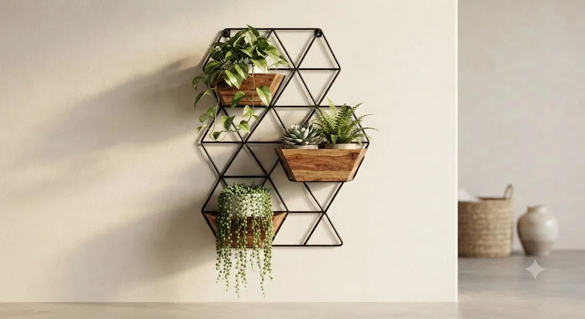
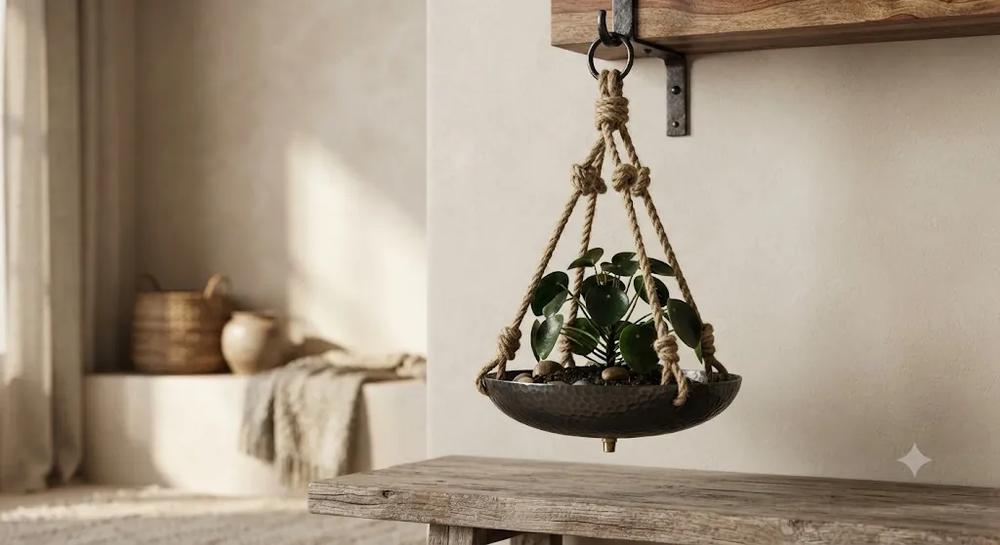
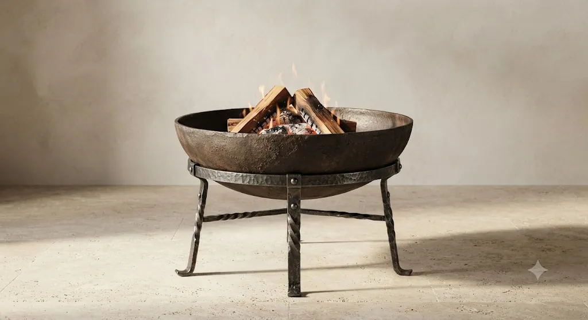
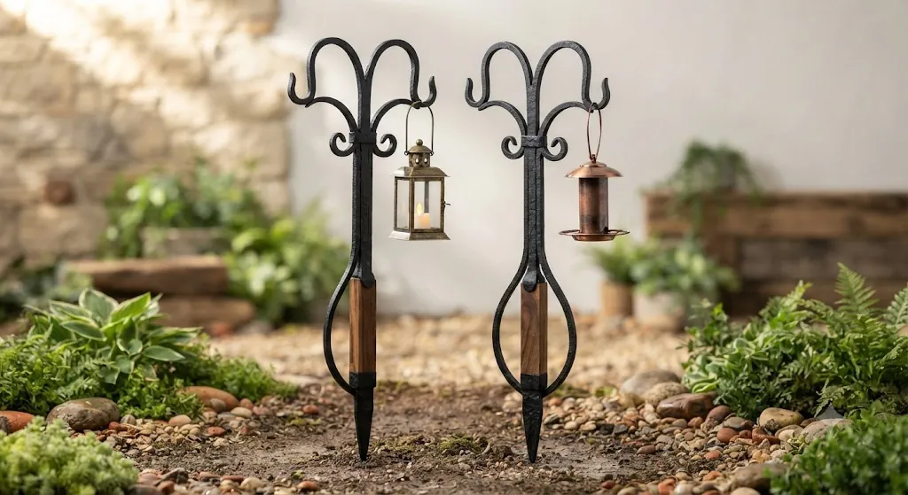
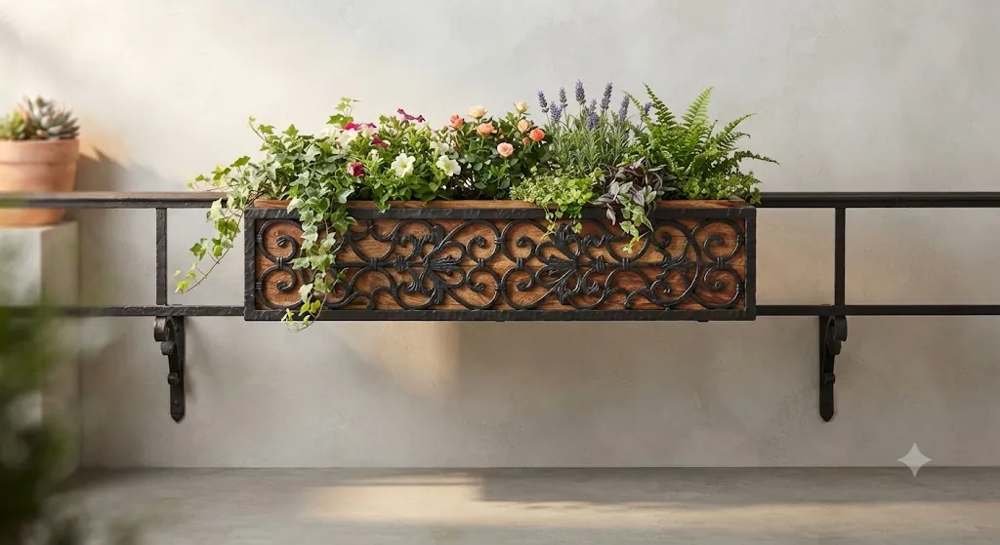
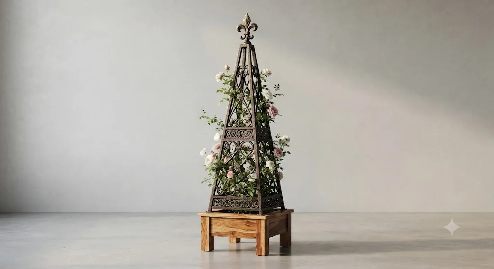

Planters, Botanical Stands & Garden Ironcraft
10 export-ready SKUs handcrafted in Jodhpur from seasoned hardwood and hand-forged iron. Priced FOB Mundra, packed for container consolidation.

Mid-Century Raised Wood Plant Stand (Adjustable)AA-PL-091 · 0.008 CBM · MOQ 100 Pcs$5.50 – $7.20

3-Tier Foldable Iron Plant Ladder StandAA-PL-092 · 0.045 CBM · MOQ 50 Pcs$22.00 – $28.50

Turned Wood Footed Planter Bowl with Zinc LinerAA-PL-093 · 0.022 CBM · MOQ 50 Pcs$14.50 – $19.00

Wall-Mounted Geometric Iron Trellis PlanterAA-PL-094 · 0.035 CBM · MOQ 50 Pcs$16.50 – $21.50

Hand-Hammered Iron Hanging Planter on Jute RopeAA-PL-095 · 0.010 CBM · MOQ 100 Pcs$7.80 – $10.20

Heavy-Duty Cast Iron Garden Fire Pit BowlAA-PL-096 · 0.120 CBM · MOQ 50 Pcs$48.00 – $64.00

Rustic Iron Wire Plant Cloche / Bell ProtectorAA-PL-097 · 0.025 CBM · MOQ 50 Pcs$9.50 – $12.50

Cast-Iron Shepherd's Hook Garden Stakes (Set of 2)AA-PL-098 · 0.015 CBM · MOQ 50 Pcs$8.00 – $10.50

Window-Box Iron Railing Planter with Cedar/Hardwood BoxAA-PL-099 · 0.035 CBM · MOQ 50 Pcs$18.50 – $24.00

Architectural Iron Obelisk Garden Trellis (6 Foot)AA-PL-100 · 0.060 CBM · MOQ 50 Pcs$24.00 – $32.00